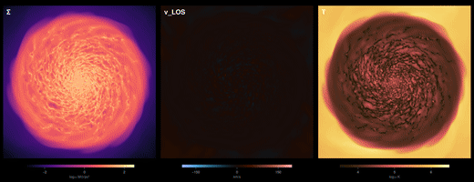

Gallery and shared workflows
Complete recipes that do one thing end to end, written so you can point them at your own simulation and run them. They live beside the tutorial notebooks, in the Notebooks repository.
The tutorial pages on this site teach one function at a time. A gallery recipe is the other shape: a whole workflow, start to finish, with the reasoning written down. Download it, change two lines, run it.

What is there

Each card links to a folder, not a bare notebook. A recipe is the notebook plus the environment it ran in:
001_coin_flip_movie/
coin_flip_movie.ipynb
Project.toml which packages, and which versions are allowed
Manifest.toml the exact versions that ran, down to every dependency
media/ the figures, the animation, and the thumbnail on the cardThe notebook's first cell activates that environment, so you run it against the versions the author ran, not against whatever is installed on your machine. Add the provenance line in the notebook header, which names the Mera build and the exact snapshot, and a reader has everything needed to get the same numbers rather than a description of them. Reproducibility covers the same idea for your own work.
The leading number is the order recipes arrived. It never changes, so it stays a stable way to refer to one even if the title does.
The code named at the start of each card is the simulation code that recipe was written against. Most of Mera's analysis is code-agnostic, so a RAMSES recipe usually transfers to another code with no change beyond the path. Readers for codes other than RAMSES are in development on the multicode branch and are not part of a 1.x release, so a recipe needing one should say so in its opening paragraph. See Other Simulation Codes.
Why share the workflow behind your paper
The most useful recipes are the ones that already exist: the analysis you wrote for a publication. Putting it here does three things at once.
It gives your work a second life. A figure in a paper shows the result. The workflow that made it shows how, and it keeps being read long after the paper stops being new. Link it from the paper and cite your own work in the notebook.
It lets people reproduce you. Someone who can take your notebook, point it at their own simulation and get the same kind of figure can check your method against their data instead of guessing at it from a caption. That does more for the result than another paragraph of method description can.
It teaches. Most of what is hard in an analysis never reaches the paper: which quantity to weight by, which limits to fix and which to let float, what you tried first that did not work. A student reading your notebook learns in an afternoon what took you a month.
Nothing here has to be polished or general. A recipe that does one thing, on one kind of data, and explains why it does it that way, is more useful than a framework nobody runs.
How to contribute one
Recipes from users are welcome. Open a pull request adding a folder to the gallery folder, or post it in Discussions and it can be added for you.
Every recipe says who wrote it
A gallery cannot promise that shared code is correct, and it would be dishonest to imply otherwise. What it can do is make every recipe attributable, so a reader can judge it rather than trust it. The template prints this block, and only the first two lines are typed:
Author Jane Doe, University of Somewhere
Contact jane.doe@somewhere.edu
Reads RAMSES
Mera 1.8.0, Julia 1.12 (or: 1.9.0-DEV (dev multicode @ 3a91f2c), Julia 1.12)
Provenance Mera v1.8.0 | AV05CD/output_00390 | 445.9 Myr | L=48.0 ndim=3 lmin=6 lmax=12
Status contributed 2026-09-11The rest writes itself from the data: info.simcode gives Reads, mera_build gives Mera, and provenance_string on what the recipe actually loaded gives Provenance. The provenance line records the version, the snapshot and the grid, so it cannot be written without having run the thing.
The Mera line matters if you were running a development version. pkgversion reports the same "1.8.0" whether that came from the registry or from a checkout of a branch, so a recipe written against multicode, or against your own fork, would look like it was written against the release. mera_build detects a git checkout and records the branch and commit instead, and marks a working tree with uncommitted changes, because then the commit alone does not identify what ran. The same build appears in the provenance line, so one line is enough to tell the two apart.
A name makes someone accountable; a provenance line makes the claim concrete; a contact lets a reader ask.
Start from the template. Copy the TEMPLATE/ folder to NNN_your_recipe/, taking the next free number. It has the skeleton, a Project.toml to fill in, and a cell that prints the block for you to paste, so the only things you type are your name and how to reach you.
Recipes are marked contributed until someone else has run them, then checked with the date. Neither is a guarantee; both beat an unsigned script.
Every recipe shows a thumbnail
The card above is the thumbnail. Pick the one picture that says best what your recipe makes, and let Mera size it. There is nothing to download: makethumb ships with Mera.
using Mera
makethumb("media/my_figure.png", "media/my_recipe_thumb.png")The whole picture is kept and the spare space padded with your figure's own background colour, so a wide multi-panel figure keeps its outer panels rather than losing them to a crop. Pass mode=:crop if you would rather fill the card. Give it an animated gif and it takes a frame part-way in, because an animation that opens on a static pose makes a dull preview from frame zero.
A movie is not read. Decoding video would add a large binary dependency to every Mera install for a job done once, so save a frame from the code that made the movie, or point it at the preview gif. A rendered frame is the better source anyway: sharper, and it compresses smaller than an upscaled gif.
From the gallery folder there is a wrapper that knows the layout, so it finds your recipe's media/ and names the file after your notebook:
julia make_thumb.jl 002_my_recipeIt runs in your recipe's own environment, which already pins Mera, so there is nothing extra to install. Set MERA_DIR to a Mera.jl checkout and the thumbnail is copied into the documentation at the same time, so nobody has to move it by hand.
What makes a recipe useful to someone else:
- Two lines to change, at the top. The path and the output number. If a reader has to hunt for what is specific to your data, they will not run it.
- Explain the decisions, not the syntax. Anyone can read a function call. Nobody can guess why a frame has to be held fixed until their own animation pulses.
- Say what went wrong. The traps you hit are the most valuable part of the write-up.
- A short version at the end. Once the choices are made, the argument bundles and the projection macros carry most of the plumbing. Showing the explained form and then the compact one teaches the concepts before the shorthand.
- Runnable on data the reader can get, their own simulation or one of the public test simulations from
download_testdata(). A recipe that only runs on unpublished data is a showcase, and should say so. - State the cost, memory and time, and how to try a cheap version first.
- Ship the environment. Commit the
Project.tomlwith[compat]bounds, and theManifest.tomlalongside it. Pkg's own words are that an independent project lets you check in aProject.toml"and even aManifest.tomlif you wish", and thatinstantiatethen installs packages "in the same state that is given by that manifest". Gitignoring the manifest is a convention for packages, which must work across a range of dependency versions; a recipe is an application, and its job is to reproduce one result. Two limits to note in your notebook: a manifest records the Julia version it was resolved on, and it pins Julia packages only, so say what else has to be installed.
See also
- Pipelines, the shorthands that make the compact version of a recipe short
- Bundling Arguments, for reusing one selection across a whole workflow
- The tutorial notebooks behind every page on this site